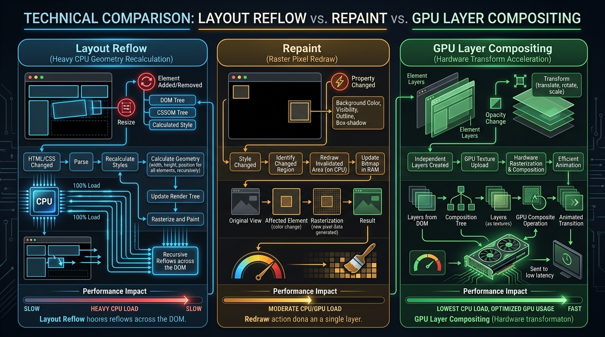

Ever wondered what actually happens inside Chrome's Blink or Firefox's Gecko rendering engine between receiving an HTML byte stream over TCP and rendering pixels at 60 FPS (or 120 FPS)? Understanding the Critical Rendering Path (CRP) is the master key to optimizing Core Web Vitals and eliminating jank.

Figure 1: The 5 stages of the Browser Critical Rendering Path.
1. The 5 Stages of the Critical Rendering Path
Stage 1: DOM Tree Construction
The browser receives raw HTML bytes from the network and performs a 4-step transformation:
Bytes → Characters → Tokens → Nodes → DOM Tree.
Stage 2: CSSOM Tree Construction
While parsing HTML, the browser encounters <link rel="stylesheet"> tags. It fetches and parses CSS rules into the CSS Object Model (CSSOM) tree. CSS is render-blocking: the browser will not paint any content until CSSOM construction completes.
Stage 3: Render Tree Creation
The browser combines the DOM and CSSOM trees to construct the Render Tree. The Render Tree contains only visible elements. Nodes with display: none or elements like <head>, <script>, <meta> are completely omitted.
Stage 4: Layout (Reflow)
The browser computes the exact geometry, width, height, and viewport position of every visible node in the Render Tree starting from the root <html> element down.
Stage 5: Paint & GPU Layer Compositing
Painting converts layout boxes into actual visual pixels (rasterization). Elements with transform, opacity, or 3D contexts are promoted to separate GPU Compositor Layers and drawn independently by the graphics hardware.
2. Reflow vs. Repaint vs. Compositing Trigger Matrix

Figure 2: Layout Reflow vs. Repaint vs. GPU Layer Compositing hardware execution.
| Property Modifiers | Pipeline Triggers | Hardware Cost |
|---|---|---|
width, height, padding, margin, fontSize, top |
Layout → Paint → Composite | Extremely High (Forces full page reflow and node recalculations). |
color, background-color, box-shadow, visibility |
Paint → Composite | Medium (Recalculates pixels without modifying element geometry). |
transform (translate3d, scale), opacity |
Composite Only | Ultra Low (Bypasses Layout & Paint; offloaded directly to GPU). |
3. Layout Thrashing: The Performance Antipattern
Figure 3: Interleaved Read/Write layout thrashing vs batched frame execution.
Layout thrashing occurs when JavaScript repeatedly reads geometric properties (forcing the browser to perform a synchronous layout calculation) and immediately writes style changes in a single loop execution:
// ❌ BAD: Forces synchronous layout recalculation on EVERY loop iteration!
for (let i = 0; i < cards.length; i++) {
const height = cards[i].offsetHeight; // FORCED SYNCHRONOUS LAYOUT (READ)
cards[i].style.height = (height + 20) + 'px'; // INVALIDATES LAYOUT (WRITE)
}
// ✅ GOOD: Read all properties first, then batch all style mutations!
const heights = Array.from(cards).map(card => card.offsetHeight); // BATCH READS
cards.forEach((card, i) => {
card.style.height = (heights[i] + 20) + 'px'; // BATCH WRITES
});
4. Measuring Core Web Vitals with PerformanceObserver
// Measuring Interaction to Next Paint (INP) & LCP via JS API
const observer = new PerformanceObserver((list) => {
for (const entry of list.getEntries()) {
console.log(`[Core Web Vital] ${entry.name}:`, entry.startTime, entry.duration);
}
});
observer.observe({ type: 'largest-contentful-paint', buffered: true });
observer.observe({ type: 'first-input', buffered: true });
5. GPU Hardware Acceleration with `will-change`
Adding will-change: transform informs the browser in advance that an element will animate, prompting it to promote the element to its own GPU compositor layer:
// CSS GPU Layer Promotion
.animated-card {
will-change: transform, opacity;
transform: translateZ(0); /* Hardware fallback */
}
Warning: Do NOT apply will-change to every element indiscriminately! Excessive GPU layer creation consumes video RAM and causes memory pressure crashes on mobile devices.
💬 Community Discussion
How do you audit layout thrashing in Chrome DevTools Performance tab? Let's discuss on LinkedIn!